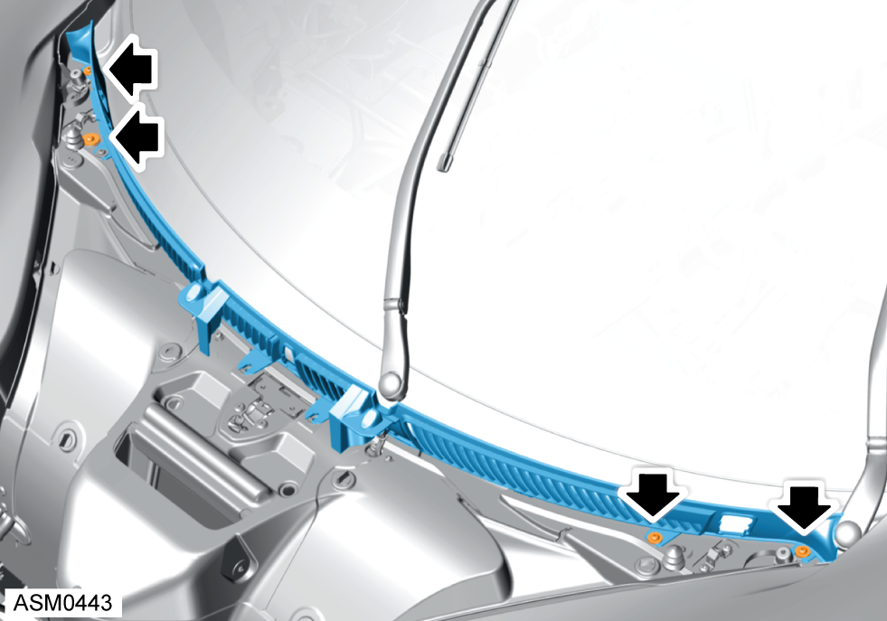
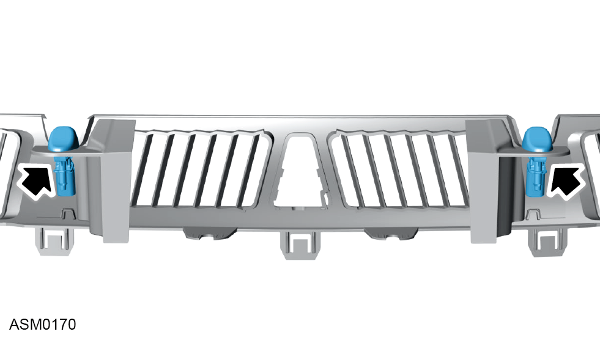

Grille Frame - Front Access Panel
Print
Operation Code: 12.03.34-02
Removal
- Open front access panel. Refer to procedure.
- Disconnect washer hose from left and right side washer jets.
- Disconnect harness connectors (x2) from left side and right side washer jets.
- Remove M6x25 screws and washers (x2) securing grille frame to gutter panel. Torque 5 Nm.

- Remove M6x16 screws and washers (x4) securing grille frame to gutter panel.
- Unclip the grille frame from the gutter panel and remove from vehicle.
- Refer to illustration for clip type and location.
Do not carry out further disassembly if component is removed for access only.

- Release clips (x2) securing washer jets to grille frame.
- Remove washer jets.
Installation
- Installation is the reverse of removal procedure.